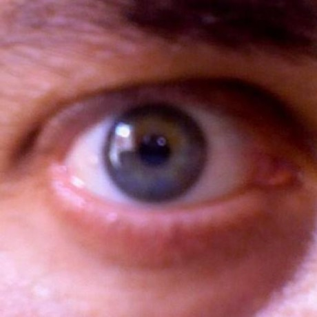

TinyGo Conference / 2026
小さくても強力な Go の世界へ、ふたたび。 Back to the world of small but powerful Go.
イベント概要 About
TinyGo Conference は、Go を組込み・小型デバイスで動かす「TinyGo」に特化したカンファレンスです。昨年の TinyGo Conference 2025 in JAPAN は、TinyGo 単独のカンファレンスとしては世界初の開催となり、技術セッションや LT に加え、はんだ付けワークショップ、自作キーボードなどの展示も行われました。 TinyGo Conference is a conference dedicated to TinyGo — the Go compiler for embedded systems and small devices. Last year's TinyGo Conference 2025 in JAPAN was the world's first conference dedicated solely to TinyGo, featuring technical sessions and lightning talks alongside a soldering workshop and exhibits including handmade keyboards.
昨年の様子はイベントレポートをご覧ください: TinyGo Conference 2025 in JAPAN を開催しました See our report on last year's event: TinyGo Conference 2025 in JAPAN event report (article in Japanese)
参加募集 Registration
TinyGo Conference 2026 の参加募集を開始しました。参加申し込みは connpass のイベントページからお願いします。 Registration for TinyGo Conference 2026 is now open. Please register via the event page on connpass.
参加申し込み (connpass) Register on connpassブログ Blog
セッション・登壇者 Sessions & Speakers
当日のタイムテーブルです。ワークショップ・展示・ブースの詳細を含め、内容は変更になる場合があります。最新情報は connpass のイベントページをご覧ください。 Here is the schedule for the day. Details — including workshops, exhibits and booths — are subject to change. For the latest information, see the event page on connpass.

スタッフ Staff
TinyGo Conference 2026 の運営スタッフです。 The organizing staff of TinyGo Conference 2026.